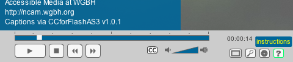
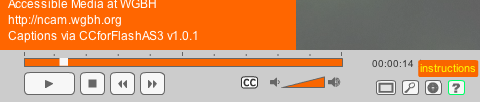

Customizing ccPlayer
There are various ways ccPlayer can be customized.
Changing the Base Color
The easiest change to make to customize ccPlayer is to select a different color to be used for the background of various objects. Use the ccBaseColor parameter to set the color that will be used in the following areas:
- background color of the sliding windows for the instructions, search, and language areas
- background color of tool tips for the buttons used to trigger the instructions, search and language areas (default controls only)
- the fill color of the area in the progress bar which denotes the percent of the media loaded (default controls only)
For example, to change from ccPlayer's default blue base color (#006699) to a base color which is orange (#ff6600), add ccBaseColor=#ff6600 in the flashvars. ccPlayer Flashvars Parameters contains more information on the flashvars parameters used with ccPlayer.
Default base color

Custom base color

Using Customized Controls
The controls in ccPlayer can be customized. In order to maintain functionality and accessibility, the new controls are limited to replacements of existing controls. However, not every object that is in ccPlayer's default controller has to be included in the customized controls. For example, if the caption file does not include multiple languages, there is no need to include the language button. Any object in the new controls are mapped to the existing controls by using the same instance names.
The authoring files (flas) for both the default controller used by ccPlayer and a sample customized controller are included in ccPlayer's download package, so they may be used as a starting point to creating customized controls. A list of the controls that may be included , their instance names and their description can be found in Creating ccPlayer Customized Controls.
Sample of customized controls
Last updated: October 14, 2009